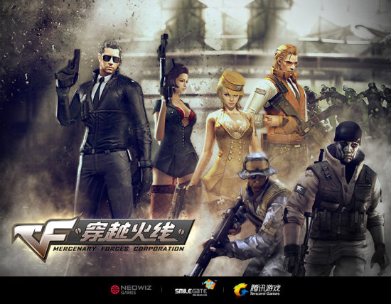

穿越火线
《穿越火线》（CrossFire，简称CF）是由Smile Gate开发，中国内地由腾讯游戏代理运营的一款第一人称射击游戏。 [81]
游戏讲述了全球两大佣兵集团Global Risk和Black List间的对决。游戏中有团队竞技模式、战队赛、爆破模式、幽灵模式等多种模式。引进了“缺人补充”形式的即时加入系统。 [1]
2016年11月，《穿越火线》荣登2016中国泛娱乐指数盛典“中国IP价值榜游戏榜top10”。 [2]2019年3月4号，入选2019年世界电子竞技大赛正式比赛项目。 [3]2021年，获得2020届17173游戏风云榜全球影响力奖。